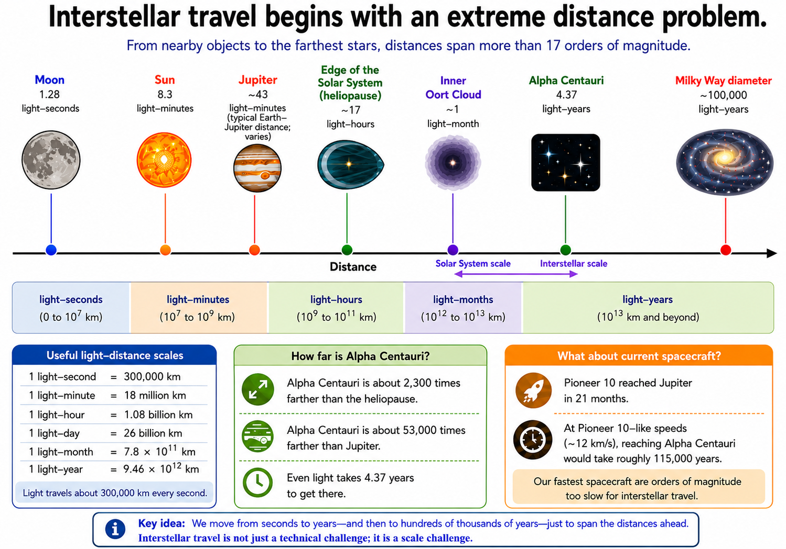
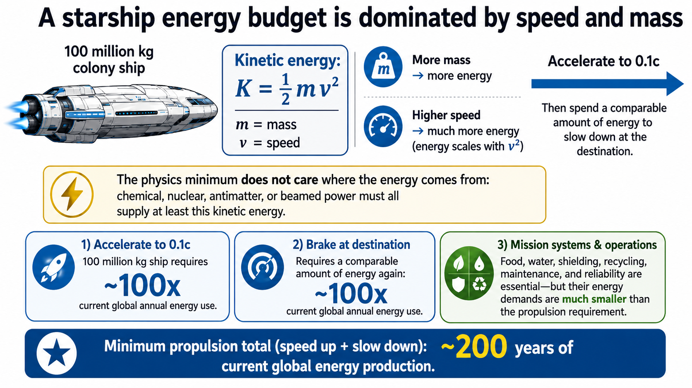
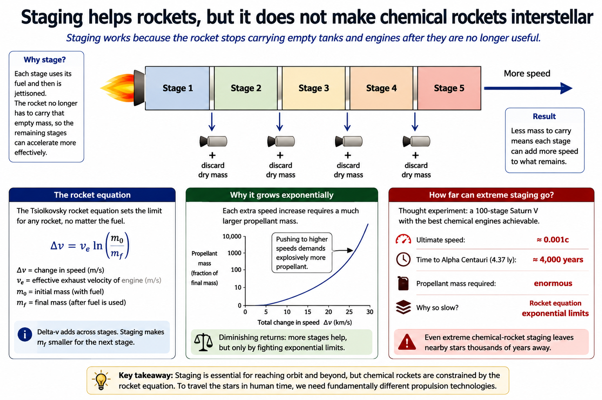
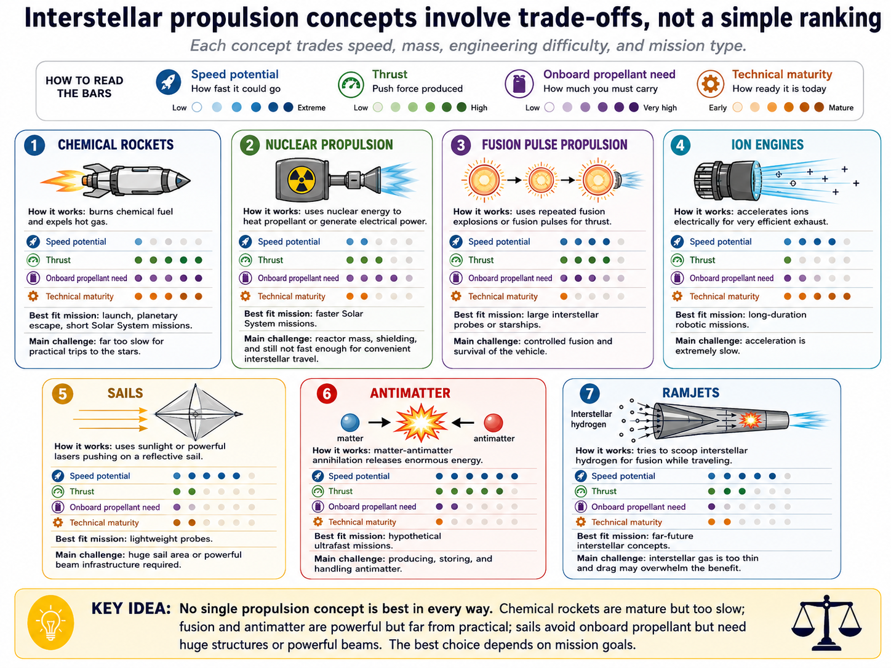
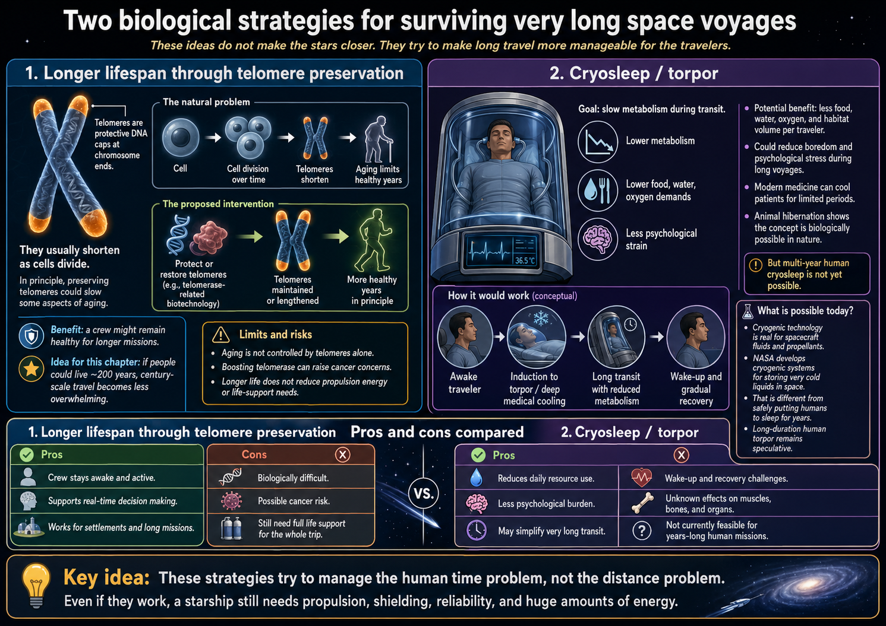
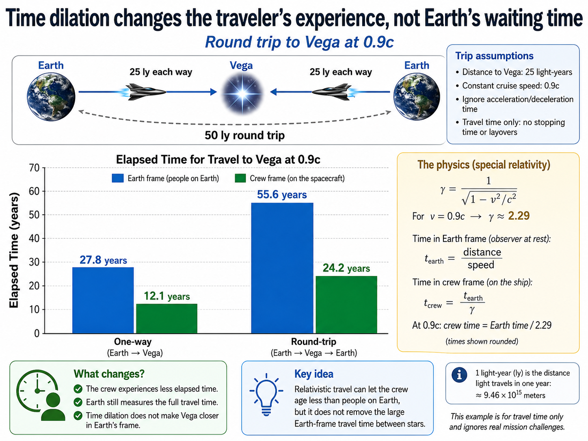
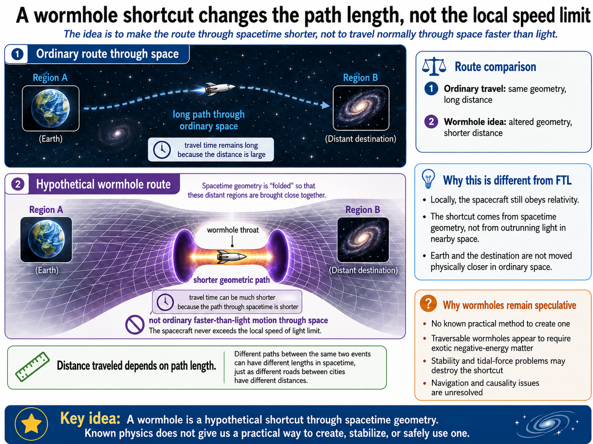
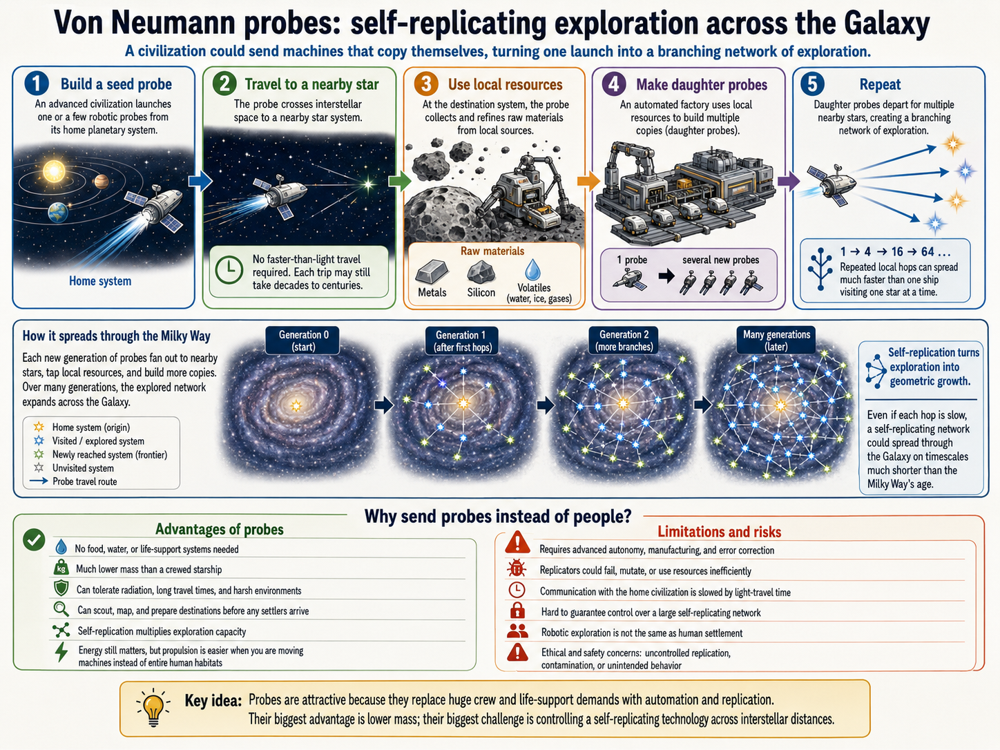
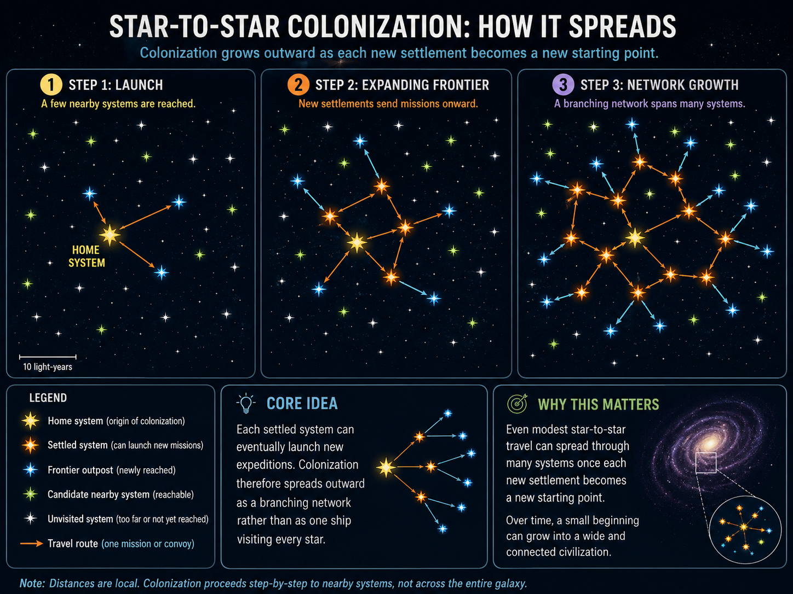
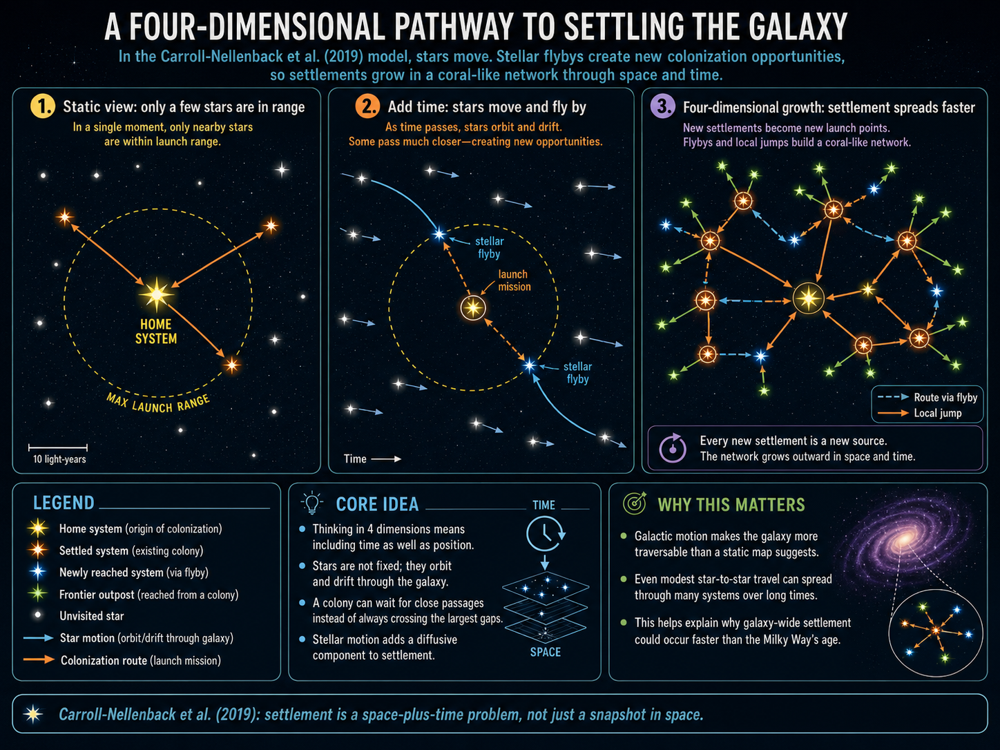

12. Interstellar Travel and the Fermi Paradox#
Jun 07, 2026 | 13657 words | 68 min read
How to use this chapter
This chapter asks two connected questions. First, what would it actually take to travel between stars? Second, if interstellar travel is physically possible for advanced technology, why do we not already see clear evidence of older civilizations in the Milky Way? Keep those questions separate as you read. A hard trip is not necessarily an impossible trip, and an unanswered question is not automatically evidence for one favored answer.
In earlier chapters, the search for life moved outward in stages. We began with Earth as the only confirmed inhabited world, then asked whether Mars, Europa, Titan, Venus, and exoplanets could be habitable. In Chapter 11, the focus shifted from life in general to technological intelligence: civilizations that might send radio, optical, or other detectable signals. This chapter takes the next step and asks what happens if intelligence does not merely send signals. Could a civilization travel to other stars? Could it colonize the Galaxy? And if so, why does the sky look quiet?
Those questions sit at the edge between astronomy, physics, engineering, biology, and sociology. The astronomy gives us the scale. The physics gives us the speed limit and the energy cost. Engineering asks what kinds of spacecraft might be possible. Biology asks whether living beings can survive long trips in radiation, isolation, and closed ecosystems. Sociology asks whether civilizations would even want to expand, whether they would last long enough, and whether they might choose not to reveal themselves.
The central lesson is not that interstellar travel is impossible. It is that interstellar travel is brutally expensive in time, energy, mass, and reliability. That matters for astrobiology because it changes how we interpret silence. A galaxy with no obvious visitors might mean technological civilizations are rare. It might mean interstellar expansion is harder than optimistic models assume. It might mean civilizations survive by becoming quieter and more sustainable. It might even mean someone is out there and we have not recognized the evidence. We do not know yet. But we can make the question scientific by making the assumptions explicit.
12.1. The challenge of interstellar travel#
12.1.1. The tyranny of distance#
Interstellar travel is difficult first because stars are not just “far away.” They are separated by distances that defeat ordinary intuition. In Chapter 3, a light-year was introduced as a distance, not a time: it is the distance light travels in one year. That definition is useful because light is the fastest thing in the universe. If even light needs years to cross the gap to the nearest stars, ordinary spacecraft are in serious trouble.
The fact that we can even put numbers on these distances is fairly recent. The first reliable stellar parallax measurements were made in the nineteenth century, when astronomers finally had instruments precise enough to detect the tiny apparent shift of nearby stars against the more distant background. Before that, the stars were known to be remote, but their distances were not measured in the modern sense.
The nearest star system, Alpha Centauri, is about 4.37 light-years away. That is close by Galactic standards, but it is still roughly 70,000 times farther than Jupiter was from Earth when Pioneer 10 reached it. Pioneer 10 launched in 1972 and reached Jupiter in about 21 months. If a spacecraft with a similar speed could be aimed toward Alpha Centauri, the trip would take roughly 100,000 years. That is longer than recorded human history by a huge factor.
Pioneer 10 also was not aimed at Alpha Centauri or at any particular nearby star system. Its future path will carry it through interstellar space, and on its current trajectory it will pass in the general neighborhood of Aldebaran on a timescale of about two million years. That makes Pioneer 10 a useful symbol of interstellar travel, but not a practical interstellar mission.
Five human-built spacecraft are on paths that will eventually leave the Solar System: Pioneer 10, Pioneer 11, Voyager 1, Voyager 2, and New Horizons. Voyager 1 and Voyager 2 are already operating beyond the heliosphere, the protective bubble created by the Sun’s wind of charged particles. That achievement is remarkable, but it is not the same as arriving at another star. Interstellar space begins long before another star system does.

Fig. 12.1 The distance problem is multiplicative, not additive. Jupiter is already far enough that a spacecraft trip took many months, but Alpha Centauri is about 70,000 times farther away. A trip across the Milky Way is larger by another enormous factor. Source: instructor-created course media based on standard astronomical distances; see NASA’s Voyager mission overview for context on spacecraft entering interstellar space. Image Credit: Course-created diagram.#
The Pioneer plaque and Voyager Golden Record also show a second lesson: an interstellar artifact carries culture as well as hardware. The Pioneer plaque includes human figures, a Solar System diagram, and a pulsar map. The Voyager record carries images, greetings in many human languages, music, and sounds from Earth, including animals and natural environments. These objects are not realistic messages for an active conversation, but they are reminders that any long-lived spacecraft also becomes evidence of the civilization that built it.
The first mistake to avoid is imagining the Solar System and the stars on the same mental scale. A spacecraft can cross from Earth to Mars or Jupiter in months to years because planets are nearby compared with the stars. The gap from the outer Solar System to the nearest star is so large that even a very successful interplanetary probe becomes a drifting artifact on interstellar scales.
This short video shows that the Voyager spacecraft makes the word interstellar feel less abstract. Focus on the difference between leaving the region shaped by the solar wind and actually reaching another star.
Interactive: Where are the Voyager spacecraft now?
NASA’s Eyes on the Solar System lets you explore the current locations and paths of spacecraft such as Voyager 1 and Voyager 2.
Open NASA Eyes on the Solar System
Use this interactive to compare the scale of planetary travel with interstellar travel. Voyager has crossed into interstellar space, but it is still only at the edge of the Sun’s influence, not anywhere close to another star.
The Pioneer and Voyager spacecraft also carry a second kind of significance. Pioneer 10 and 11 carry engraved plaques. Voyager 1 and 2 carry gold-plated copper records. These objects are not practical communication systems; the odds that someone will find them are extremely small. They are better understood as messages in a cosmic bottle. They remind us that spacecraft can outlive their builders and that any interstellar artifact would also be a cultural object.

Fig. 12.2 The Pioneer plaque uses scientific clues rather than human language: the hydrogen atom as a unit reference, a pulsar map to locate the Sun, and a diagram of the spacecraft and humans. It is a message aimed at any future spacefarer who might find the craft, not a realistic method of two-way communication. Source: NASA Pioneer Plaque. Credit: NASA Ames; NASA media.#

Fig. 12.3 The Voyager Golden Record cover is a set of instructions. It explains how to play the record, how to reconstruct images, how to use a hydrogen transition as a time unit, and how to locate the Sun with a pulsar map. The difficulty of decoding it shows why communicating across species and cultures is not just a radio problem. Source: NASA Golden Record Cover. Credit: NASA/JPL; NASA media.#
Checkpoint
Why is a spacecraft leaving the heliosphere not the same as a spacecraft reaching another star?
The phrase tyranny of distance is a good description because distance controls nearly everything else. A larger distance means a longer travel time, more years of spacecraft reliability, more shielding against radiation and dust, more time for small errors in aiming to matter, and a longer wait for any signal to return. Before we ask what kind of engine could reach another star, we have to face the fact that the destination is almost absurdly far away.
12.1.2. The speed limit is not just an engineering problem#
It is natural to respond to the distance problem by saying, “Build a faster spacecraft.” That is exactly the right instinct, but relativity immediately sets a boundary. Einstein’s special theory of relativity says that no object with mass can be accelerated to or beyond the speed of light. Light travels at about \(300{,}000\ {\rm km/s}\), and even at that speed a one-way trip to Alpha Centauri takes more than four years. A two-way trip at light speed would take about 8.74 years as measured from Earth, and no massive spacecraft can actually reach that speed.
The size of the gap is severe. A Pioneer-like spacecraft is so slow that reaching the nearest stars in about one year would require a speed increase of roughly \(100{,}000\) times. That is not the same as improving a car or airplane engine. It pushes directly against the relativistic speed limit and the energy cost of accelerating mass. Crossing the whole Milky Way at light speed would still take about \(100{,}000\) years.
Could relativity simply be wrong? In science, no theory is sacred in the sense of being immune to revision. But a successful theory cannot simply be thrown away because it is inconvenient. Special relativity is built into particle physics, nuclear energy, GPS timing, high-energy astronomy, and modern accelerator experiments. A future theory might deepen or extend relativity, just as relativity deepened Newtonian mechanics, but it would still have to reproduce the enormous body of evidence that already works.
That means faster-than-light travel should not be treated as “just one more technology.” It would require new physics or an exotic use of known physics. Ordinary engineering can improve materials, engines, control systems, and power generation. It cannot simply vote away the structure of spacetime.
A useful first calculation is to ignore all engineering details and ask how long different speeds would take for the nearest star system. This is a friendly calculation because light-years make the arithmetic simple: at the speed of light, one light-year takes one year.
# Travel time to Alpha Centauri for several fractions of light speed.
# Distance is measured in light-years, so time in years = distance / fraction_of_c.
alpha_centauri_distance_ly = 4.37 # distance to Alpha Centauri in light-years
speeds = [0.001, 0.01, 0.1, 0.2, 0.9] # spacecraft speed as a fraction of light speed
for speed in speeds:
travel_time_years = alpha_centauri_distance_ly / speed
print(f"At {speed:.3f}c, the one-way trip to Alpha Centauri takes about {travel_time_years:,.1f} years.")
At 0.001c, the one-way trip to Alpha Centauri takes about 4,370.0 years.
At 0.010c, the one-way trip to Alpha Centauri takes about 437.0 years.
At 0.100c, the one-way trip to Alpha Centauri takes about 43.7 years.
At 0.200c, the one-way trip to Alpha Centauri takes about 21.8 years.
At 0.900c, the one-way trip to Alpha Centauri takes about 4.9 years.
The calculation shows why the speed range matters so much. At \(0.001c\), Alpha Centauri is still thousands of years away. At \(0.01c\), the trip is centuries. At \(0.1c\), the trip becomes comparable to a human working lifetime, though not a round trip home to the same world you left. At \(0.2c\), a robotic flyby mission begins to sound plausible on a human planning timescale. At \(0.9c\), the trip is fast by interstellar standards, but the energy and shielding problems become extreme.
Checkpoint
Why does reaching 10% of light speed change interstellar travel from a geological-timescale problem to a civilization-timescale problem, even though it is still far below light speed?
The speed limit does not make interstellar travel impossible. It makes it honest. Any serious proposal has to say what speed it can reach, how much mass it can carry, how much energy it needs, and whether the mission is a flyby, a robotic probe, a crewed trip, or a true colonization attempt.
12.1.3. Energy, mass, and the minimum cost of motion#
Space travel requires energy in many forms: kinetic energy to move the spacecraft, chemical or nuclear energy to run systems, electrical energy for sensors and communications, thermal control to keep hardware alive, and life-support energy if living beings are aboard. The most unavoidable piece is kinetic energy. If a ship has mass \(m\) and speed \(v\), the classical kinetic energy is
At speeds close to light speed, the relativistic expression must be used. But even the classical expression is enough to show the problem at \(0.1c\). The energy increases with the square of speed. Doubling the speed does not double the kinetic energy; it multiplies it by four.
A colonization ship also has a mass problem. A crewed mission cannot be treated like a small robotic probe. People require shielding, food, water, oxygen, medical equipment, spare parts, living space, social stability, and a way to recover from failures. A paper by Salotti (2020) estimated that a self-sustaining settlement on another planet might need at least about 110 people under a particular set of assumptions. A true interstellar colony mission could plausibly require far more people because the destination might offer no immediate rescue, supply chain, or familiar biosphere.
Suppose a large ship carries 5000 people. If we estimate the ship mass at about \(18{,}000\ {\rm kg}\) per person, comparable to the mass per passenger of a large ocean liner, the ship mass is about \(100\) million kg. That is not a final design. It is a scale estimate. Scale estimates are powerful because they show whether an idea is “difficult but plausible” or “requires a civilization-level energy commitment.”

Fig. 12.4 A minimum interstellar energy estimate starts with kinetic energy. Real missions also need braking, shielding, life support, maintenance, and error recovery. This figure separates the unavoidable physics cost from the additional engineering costs. Source: course-created diagram based on the kinetic-energy scaling discussed by Millis (2011). Image Credit: Course-created diagram.#
# Minimum kinetic energy for a very large starship moving at 0.1c.
# This ignores propellant, inefficiency, life support, shielding, and braking.
ship_mass_kg = 1.0e8 # estimated starship mass in kilograms
speed_of_light_m_s = 3.0e8 # speed of light in meters per second
speed_fraction = 0.1 # spacecraft speed as a fraction of light speed
ship_speed_m_s = speed_fraction * speed_of_light_m_s
kinetic_energy_joules = 0.5 * ship_mass_kg * ship_speed_m_s**2
world_energy_per_year_joules = 6.0e20 # rough current annual global energy use in joules
energy_years = kinetic_energy_joules / world_energy_per_year_joules
round_trip_accel_brake_years = 2 * energy_years
print(f"Minimum kinetic energy at 0.1c: {kinetic_energy_joules:.2e} joules.")
print(f"That is about {energy_years:.0f} years of current global energy use just to speed up.")
print(f"Speeding up and slowing down would require about {round_trip_accel_brake_years:.0f} years of current global energy use before other costs are included.")
Minimum kinetic energy at 0.1c: 4.50e+22 joules.
That is about 75 years of current global energy use just to speed up.
Speeding up and slowing down would require about 150 years of current global energy use before other costs are included.
The number is not meant to be a prediction for a future energy economy. It is meant to show why “just make a faster ship” is not a small request. Millis (2011) used energy trends and mission estimates to argue that the first interstellar missions are limited not just by imagination, but by the amount of energy a society can practically devote to one project.
Accelerating a \(\sim 100\) million kg colony ship to \(0.1c\) requires an energy scale of about \(100\) times current global annual energy use. Stopping at the destination requires a comparable amount again, so acceleration plus braking pushes the rough requirement toward \(200\) years of present global energy production before food, water, shielding, maintenance, inefficiency, or error recovery are included. Different energy baselines give slightly different numbers, but the conclusion is the same: the minimum motion cost is already civilization-scale.
Checkpoint
Why is the kinetic-energy calculation useful even though it ignores propellant, shielding, food, water, and engine efficiency?
The optimistic way to read the calculation is that it does not violate physics. The blunt way to read it is that crewed interstellar travel would be a civilization-scale project even before the ship is designed. That distinction matters: “not impossible” and “not presently practical” are not the same claim.
12.2. Why existing rockets are not enough#
12.2.1. Rockets, reaction forces, and staging#
Rockets work because of Newton’s third law: for every action, there is an equal and opposite reaction. A rocket throws mass backward at high speed, and the rocket moves forward. It does not need air to push against. In fact, air usually makes launch harder because the atmosphere creates drag and heating.
Serious thinking about spaceflight began before rockets were practical. In the 1860s, Jules Verne imagined travel to the Moon using an enormous artillery shell. That was not a workable design, because the acceleration would be deadly and the physics of launch is different from ordinary cannon fire. But the story helped make space travel feel like a technological problem rather than pure fantasy.
This point was not always obvious to the public. Robert Goddard suggested in 1920 that a large rocket could reach the Moon, and the New York Times famously mocked the idea by implying that a rocket would have nothing to push against in space. The criticism missed the physics. The rocket pushes on its own exhaust; the exhaust pushes back on the rocket. Konstantin Tsiolkovsky, Hermann Oberth, and Goddard all helped develop the theoretical foundation of rocketry. Their work eventually fed into liquid-fuel rockets, ballistic missiles, and space launch vehicles.
The history is messy. German V-2 rockets were weapons used during World War II, and after the war the United States brought many German rocket engineers and technicians into its own program through Operation Paperclip, including Wernher von Braun. That history should not be sanitized. It is also true that rocket development made the Space Age possible. A technology can have a disturbing origin and still become scientifically valuable later. A careful course on astrobiology has to be able to hold both facts at once.
The timeline makes the connection clear. Goddard launched his first liquid-fuel rocket in 1926, and it reached only about 13 m. By the 1930s and 1940s, Germany had developed the V-2, which was used as a weapon against England during World War II; more than 1300 V-2 rockets struck London alone. Operation Paperclip later moved more than 1600 German scientists, technicians, and engineers to the United States, including von Braun, who became the first director of NASA’s Marshall Space Flight Center in Huntsville, Alabama. Sputnik’s launch in 1957 then marked the start of the Space Age. This is a hard history, not a clean heroic story.
This video gives local historical context for Operation Paperclip and Huntsville’s role in the U.S. space program. Focus on the complicated connection between rocket technology, World War II, the Cold War, and NASA’s later achievements. The point is not to excuse the history, but to understand why spaceflight developed through a messy mix of science, engineering, military priorities, and politics.
This video compares NASA’s Space Launch System with SpaceX’s Starship. Focus on the difference between an expendable rocket and a reusable rocket, and why reusability changes the cost and capability discussion. The larger point for this chapter is not that Starship solves interstellar travel. It shows that even the most ambitious chemical rockets are still designed for the Solar System, not for convenient travel between stars.
Modern chemical rockets burn fuel and oxidizer to make hot gas. The hot gas expands through a nozzle and is expelled backward. Saturn V used liquid oxygen and kerosene in its first stage and liquid hydrogen and oxygen in upper stages. SpaceX Starship uses liquid oxygen and methane. These are powerful machines, but their energy comes from chemical bonds, and chemical bonds store only a tiny fraction of the energy locked in matter.
Starship is now the largest chemical rocket launched, while Saturn V remains the classic comparison because it carried astronauts to the Moon. Starship uses a two-stage architecture, with a lower booster designed to return and be reused. Reusability can make launch cheaper and more frequent, but it does not change the basic chemical-energy limit for interstellar flight.
The deeper limit is the rocket equation. The speed a rocket can gain depends on the exhaust speed and the ratio of full mass to empty mass. To get more speed, a rocket generally needs more propellant. But that propellant has to be lifted too, which requires even more propellant. This is the exponential trap sometimes called the tyranny of the rocket equation.

Fig. 12.5 Staging works because the rocket stops carrying empty tanks and engines after they are no longer useful. This is essential for reaching orbit, but it does not solve interstellar travel. Even extreme chemical-rocket staging leaves nearby stars thousands of years away. Image Credit: Course-created diagram.#
A single-stage chemical rocket capable of escaping Earth would need a huge mass ratio. Staging lowers the required mass ratio for each step because each upper stage no longer carries the empty lower stages. That is why real launch vehicles use multiple stages. Staging gets us to orbit and beyond Earth. It does not get a large payload to Alpha Centauri on a useful timescale.
Let’s puts numbers on the problem. Earth escape speed is about \(11\ {\rm km/s}\). A single-stage chemical rocket trying to reach that speed would require a mass ratio of about 39, meaning the fully fueled rocket would be 39 times more massive than the rocket after the fuel was spent. In plain language, the fuel mass would be about 38 times the mass of the spacecraft and engines. The best single-stage rockets have mass ratios less than about 15, and Starship’s stage-level mass ratio is about 3.6. Multiple stages are not optional; they are how chemical rockets escape the exponential trap at all.
Imagine a Saturn V-like chemical rocket with 100 stages. That is already far beyond practical design. It might reach about \(370\ {\rm km/s}\), which is much faster than escape velocity from Earth, but only about \(0.001c\). A trip to Alpha Centauri would still take roughly 4000 years. More efficient chemical fuel might reduce the time somewhat, but not enough to change the basic conclusion.
Checkpoint
Why does adding more rocket stages help with launch from Earth but fail to make chemical rockets a good solution for interstellar travel?
Chemical rockets are magnificent for leaving planets and moving around the Solar System. They are the wrong tool for convenient travel between stars. To shorten interstellar travel from thousands of years to decades, we need a much denser energy source, a way to avoid carrying all the fuel, or a mission that sends something much smaller than a crewed ship.
12.2.2. From chemical energy to nuclear energy#
Chemical rockets use energy stored in electron arrangements. Chemical reactions shuffle electrons between atoms and molecules. That can release a lot of useful heat, but it barely changes the mass of the reactants. Einstein’s famous relationship \(E=mc^2\) shows why that matters. Mass itself is an enormous reservoir of energy, but chemical reactions access only a tiny fraction of it.
If one kilogram of matter could be converted completely into energy, the result would be about \(9\times10^{16}\ {\rm J}\). That is comparable to an enormous amount of fuel. In practice, converting all of a kilogram into useful directed spacecraft energy is not something we can do with ordinary matter. But nuclear reactions get closer than chemistry because they alter atomic nuclei, not just electron arrangements.
One way to feel the scale is to compare total mass-energy with ordinary fuel. Completely converting a 1 kg rock to energy would release an amount comparable to billions of liters of gasoline, roughly several days of United States energy consumption. Chemical reactions do not appear to lose mass in ordinary life because they tap such a tiny fraction of the mass-energy stored in matter. Nuclear reactions are different because they change the nucleus itself.
Nuclear fission splits heavy nuclei into less massive pieces. In uranium fission, about \(0.07\%\) of the mass becomes energy. That sounds small, but it is enormous compared with chemical reactions. Nuclear fusion combines light nuclei into more massive nuclei and can release even more energy per unit mass. In hydrogen-to-helium fusion, roughly \(0.7\%\) of the starting mass can become energy. Fusion powers stars, but controlled, sustained fusion propulsion remains beyond current spacecraft engineering.
That \(0.07\%\) mass conversion in uranium fission corresponds to roughly \(200\) million times more energy per reaction than typical chemical reactions. Fusion is about ten times more efficient again in this simple comparison. Fusion has been achieved on Earth, but not yet in the sustained, compact, controllable form needed for a starship engine; even long fusion demonstrations are measured in minutes, not mission lifetimes.

Fig. 12.6 Interstellar propulsion concepts are not simply ranked from good to bad. Each one trades speed, mass, engineering difficulty, and mission type. Chemical rockets are mature but too slow; fusion and antimatter are powerful but far from practical; sails avoid onboard propellant but require huge areas or powerful beams. Image Credit: Course-created diagram.#
Los Alamos National Laboratory
This historical film shows how seriously nuclear thermal rockets were studied during the Cold War and Apollo era. Focus on the engineering idea rather than the period’s optimism: hydrogen is used as propellant, while the reactor supplies heat.
This video gives historical context for Project Orion, a nuclear pulse propulsion idea that sounds absurd until you compare nuclear energy to chemical energy. Focus on why the proposal is physically motivated but politically and environmentally hard to imagine using.
This video is a good bridge from nuclear pulse propulsion to fusion starship design. Focus on the distinction between a detailed engineering study and a technology that is ready to build.
Project Rover was a nuclear thermal rocket program. The idea was not to fuse hydrogen. Instead, a fission reactor would heat hydrogen propellant to very high temperature and expel it through a nozzle. The advantage is that the energy source is nuclear, while the propellant can be a light gas. Project Rover tested engines and employed many people at its peak. NASA once imagined nuclear thermal rockets as part of a post-Apollo human mission to Mars, but political priorities changed, and the program ended in 1973.
Project Rover aimed to heat hydrogen propellant to roughly one million kelvin, tested six engines, and employed about 1800 people at its peak. The intended follow-up to Apollo included human missions to Mars using Rover-derived nuclear rockets. The physics was serious, but the political and budgetary environment changed.
Project Orion was more radical. Instead of putting a reactor inside the rocket, it proposed detonating small nuclear explosives behind a massive pusher plate. Each explosion would briefly push the plate, and shock absorbers would transfer momentum to the spacecraft. Freeman Dyson and others studied the idea seriously. It is physically motivated because nuclear explosions release huge amounts of energy. It is also politically, environmentally, and strategically nightmarish. A spacecraft that uses hundreds of thousands of nuclear devices is not just a propulsion system; it is a civilization-level risk.
The Orion idea appeared in a Los Alamos memo in 1946. In one version, each bomb would be released and detonated about 50 m behind the spacecraft, so the pusher plate would feel the blast for only milliseconds at a time. Dyson estimated that an Orion-style craft might reach Alpha Centauri in about 100 years, but let’s evaluate the scale of the price: roughly 300,000 bombs and a cost of about \(3.3\) trillion for one rocket, nearly an entire year’s United States income in the historical comparison.
Project Daedalus, developed by the British Interplanetary Society in the 1970s, imagined an uncrewed fusion-powered probe. Frozen pellets of deuterium and helium-3 would be fired into a reaction chamber and ignited, producing a rapid series of fusion micro-explosions. The study was important because it tried to design a plausible interstellar probe using physics that did not require faster-than-light travel. Later reviews and related work, such as Reddy et al. (2015) and Project Icarus studies like Long (2009), treat Daedalus as a benchmark for serious starship engineering.
In the Daedalus design, the fuel pellets would be encouraged to fuse using electron beams. The mission concept assumed about four years of powered fusion-pulse acceleration followed by about forty years of coasting at roughly \(0.1c\), giving an Alpha Centauri travel time of about 44 years. That is still uncrewed and beyond current fusion engineering, but it shows why nuclear propulsion is the first technology family that begins to look interstellar.
Even optimistic nuclear concepts usually reach speeds around \(0.1c\), not light speed. That is a huge improvement over chemical rockets. At \(0.1c\), Alpha Centauri is a roughly 44-year trip if you include acceleration and coasting in a Daedalus-like scenario. That is long, but not mythological. It is the first speed range where interstellar missions become discussable within one or two human lifetimes.
Checkpoint
Why do nuclear propulsion ideas change the interstellar travel discussion even though none of them are ready to build as practical starships?
The lesson is that physics leaves a narrow door open. Nuclear energy can, in principle, produce interstellar speeds. The catch is that every version of the idea brings hard engineering problems and social consequences. A real interstellar mission would have to be not only powerful, but reliable, controllable, politically acceptable, and worth the opportunity cost.
12.2.3. Slow acceleration: ion engines, solar sails, and laser sails#
Not every spacecraft needs a huge blast of thrust. A slow acceleration system can push gently for a long time. Ion engines do this by accelerating charged particles rearward as exhaust. The thrust is small, so an ion engine cannot launch from Earth’s surface. But in space, where there is no ground to lift away from and no air resistance, a small continuous push can build up a large speed over time.
NASA’s DART mission used an ion propulsion system called NEXT-C, which shows that electric propulsion is not just science fiction. Ion engines are efficient because they use propellant sparingly. Their weakness is low thrust. That makes them excellent for some robotic missions and poor for launching heavy crewed vehicles. In principle, advanced electric propulsion might reach around \(1\%\) of light speed for some mission designs, but this is still a centuries-scale speed for nearby stars.
Solar sails avoid onboard propellant almost entirely. Light carries momentum, so sunlight exerts pressure on a reflective surface. The pressure is tiny, but it can act continuously. With no air resistance in space, that matters. A solar sail is like a sailboat using light instead of wind. The problem is area. The force depends on how much light the sail intercepts, so useful sails can become enormous. The push from sunlight also fades with distance from the Sun, so the strongest acceleration requires starting close to the Sun or using a different light source.
Truly ambitious solar sails might need widths greater than 100 km. That is far beyond ordinary spacecraft construction, but the tradeoff is attractive because the spacecraft does not have to carry propellant for the main push. In optimistic interstellar concepts, solar sails might reach about \(1\%\) of light speed, still slow for stars but much faster than chemical-rockets-on-coast trajectories.
This video introduces solar sail technology through a real NASA demonstration mission. Focus on the basic physics: light carries momentum, so a large reflective sail can be pushed without carrying propellant.
Laser sails replace sunlight with a directed beam. A powerful laser array could focus light on a sail and push a spacecraft much harder than sunlight alone. This is the basic idea behind Breakthrough Starshot, which aims to explore the possibility of gram-scale probes accelerated by ground-based lasers to a significant fraction of light speed. The official Breakthrough Initiatives description presents Starshot as a proof-of-concept for ultra-fast light-driven nanocraft, not a conventional crewed mission.
There are two different laser-sail ideas that should not be blurred together. One is an onboard laser system that carries its own power source and uses the beam to vaporize propellant or push a sail. For a human-scale craft reaching something like \(0.5c\), this would require a power demand around 1000 times current human power consumption, and the craft would still need years to accelerate. It would also have to slow down, perhaps by firing propellant forward or by using natural magnetic fields as a brake. The other idea is Starshot’s ground-based laser array, where most of the power infrastructure stays in the Solar System and the spacecraft is tiny.
This animation shows the basic Breakthrough Starshot idea: accelerate very small probes using ground-based lasers and light sails. Treat it as a concept visualization, not as a demonstration that the mission is already practical.
The strength of a laser sail is that the spacecraft does not carry most of its energy source. The weakness is that the infrastructure becomes enormous. The laser array must deliver extreme power, maintain aim on a tiny fast-moving sail, and avoid destroying the sail through heating or instability. A probe traveling at \(0.2c\) also slams into interstellar gas and dust at destructive speeds. Studies such as Hoang et al. (2017) have examined how relativistic dust and gas collisions could damage such spacecraft.
Breakthrough Starshot therefore changes the mission by shrinking the spacecraft to about a gram. Many probes would be needed because a high-speed impact with even a tiny dust grain could destroy a probe. The goal would not be to stop and explore like a planetary orbiter; it would be a fast flyby that sends images and data back by radio or laser communication.
Crewed interstellar travel adds a different class of problem: biology. A robotic probe can be powered down, restarted, shielded, duplicated, or abandoned if it fails. A human crew cannot be treated that way. People need food, water, oxygen, medical care, social stability, radiation protection, and a livable environment for the entire trip. If a journey takes centuries, then the mission is not only an engineering problem. It becomes a question of whether human bodies and human societies can remain functional across timescales much longer than a normal lifetime.
One proposed solution is to make the trip feel shorter biologically. Science fiction often imagines cryosleep as a deep freeze: passengers are preserved for decades or centuries and revived at the destination. Real biology is not that simple. Freezing living tissue can damage cells, ice crystals can disrupt membranes, and long-term preservation of a whole healthy human is far beyond current medicine. A more grounded version is torpor or suspended animation, where metabolism is slowed rather than stopped. That could reduce the need for food, water, oxygen, and habitat volume during transit. Modern medicine can cool patients for limited periods, and some animals naturally enter low-metabolism states, so the idea is not pure fantasy. The problem is scale. Keeping humans safely in torpor for years, decades, or centuries, then waking them without major organ, muscle, bone, brain, or immune-system damage, is not a demonstrated technology.
Another proposed solution is to extend the useful human lifespan. If people could remain healthy and mentally capable for roughly 200 years, then a long interstellar voyage would be less extreme. One possible biological target is telomere shortening. Telomeres are protective DNA caps at the ends of chromosomes, and they tend to shorten as cells divide. Preserving or restoring telomeres might slow some forms of cellular aging, at least in principle. But aging is not controlled by telomeres alone. It also involves DNA damage, cancer risk, immune decline, metabolism, inflammation, organ wear, and many other biological processes. Simply lengthening telomeres would not automatically produce a healthy two-century lifespan, and increasing cell-division potential could raise the risk of uncontrolled cell growth.
These ideas matter because they show that interstellar travel is not only about building a faster engine. A mission lasting many decades or centuries must either keep people alive and healthy for the whole journey, reduce how much biological time they experience, or avoid sending people at all. Lifespan extension and cryosleep could make long voyages more manageable for a crew, but neither one solves the distance problem. The ship would still need propulsion, braking, shielding, navigation, repairs, energy, and reliability across interstellar distances.

Fig. 12.7 Biological strategies such as lifespan extension and cryosleep try to manage the human time problem in interstellar travel. They could reduce some crew-related limits, but they do not remove the need for propulsion, shielding, reliability, and large energy budgets. Source: instructor-created course media informed by NASA’s discussion of cryogenic technology in spaceflight. Image Credit: Course-created diagram.#
A third option is a generation ship or ark ship: a large closed habitat where people live, reproduce, and maintain a society across many generations. That avoids the need to keep the original crew alive for the whole trip, but it creates severe ecological and social requirements. The ship would need a stable closed environment, reliable governance, education, conflict resolution, and enough shared purpose to avoid collapse or mutiny. The biology problem is therefore also a society problem.
Checkpoint
How does a laser sail move the hardest engineering problem from the spacecraft itself to the civilization that builds the launch system?
Sails point toward an important future pattern: the first interstellar mission may not carry people. It may be a swarm of tiny probes with cameras, sensors, and communication systems. A flyby probe would not need food, oxygen, artificial gravity, or a closed ecosystem. It also might not be able to slow down. That is a very different mission from colonization, but it would still be a historic first step.
12.3. Approaching light speed#
12.3.1. Relativity helps the traveler but not the people left behind#
If a spacecraft could reach a large fraction of light speed, relativity changes the experience of time. Time dilation means that a moving clock ticks more slowly relative to a stationary observer. This is not an illusion. It has been measured in particle lifetimes, atomic clocks, and satellite timing. At everyday speeds, the effect is tiny. Near light speed, it becomes dramatic.
Imagine a trip to Vega, which is about 25 light-years away, at \(0.9c\). From Earth’s point of view, the one-way travel time is distance divided by speed: about 28 years. A round trip is about 56 years, not counting acceleration and braking. But for the crew, time is dilated. At \(0.9c\), the Lorentz factor is about 2.3, so the crew experiences less time than Earth does. In a simplified constant-speed calculation, the crew might experience about 24 years for the round trip. The traveler comes home younger than an identical twin who stayed on Earth.

Fig. 12.8 Time dilation makes the trip feel shorter for the crew, but it does not make the destination closer for Earth. A relativistic traveler can age less than people left behind while Earth still waits decades, centuries, or longer. Image Credit: Course-created diagram.#
A more ambitious thought experiment is to accelerate continuously at \(1g\), the acceleration you feel at Earth’s surface. A spacecraft doing this would feel like it has artificial gravity from acceleration. It would start slowly, then approach light speed. In the ship frame, extremely distant destinations could be reached in surprisingly short proper time. But the Earth frame still matters. If a ship travels to a star 500 light-years away, Earth-based observers still wait roughly 500 years for arrival, and any radio reply takes another 500 years to return.
A ship maintaining \(1g\) acceleration for the appropriate parts of the trip could reach a star 500 light-years away while the crew measures only about 12 years. That sounds almost magical until the Earth-frame time is included. Earth waits about 500 years for the ship to arrive, and a radio message sent back after arrival reaches Earth roughly 1000 years after departure. For the crew, the trip can fit inside a life. For Earth, it spans civilizations.
That creates a social problem, not just a physics problem. A crew that leaves on a relativistic journey cannot really come home to the same society. Everyone they knew may be gone. The civilization that launched them may have changed beyond recognition. Relativity can make the trip survivable for the travelers, but it cannot preserve the shared present between the travelers and Earth.
Checkpoint
Why does time dilation make relativistic travel more attractive for a crew but less useful for maintaining a normal relationship with the home civilization?
Relativity is therefore a mixed gift. It opens the door to human-scale travel times for the people aboard a near-light-speed ship, but it also turns interstellar travel into a one-way social separation. Even if the ship returns, the world it returns to is not the one it left.
Interactive: Interstellar Map
If the interactive does not load in the embedded window, open it directly here: Interstellar Map.
Use this interactive to explore nearby stars in three dimensions. Try zooming, panning, and comparing distances in light-years. Focus on the difference between a flat star map and the real three-dimensional spacing of nearby star systems.
12.3.2. Antimatter and interstellar ramjets#
If fusion converts only a small fraction of mass into energy, matter-antimatter annihilation seems like the next obvious step. Antimatter particles have the opposite charge of ordinary matter particles. A positron is the antimatter counterpart of an electron. An antiproton is the antimatter counterpart of a proton. When matter and antimatter meet, they can annihilate into high-energy particles and radiation.
The basic particles are not fictional. The positron, an electron with positive charge, was discovered in 1932. The antiproton, a proton counterpart with negative charge, was discovered in 1955. Anti-hydrogen can be made from an antiproton and a positron. These facts make antimatter real physics, but not automatically practical fuel.
In principle, matter-antimatter propulsion is the most energy-dense rocket idea we know. If the reaction products could be directed out the back of a spacecraft, the engine could achieve extremely high exhaust speeds. That makes relativistic travel more plausible on paper. A modest mass ratio might reach speeds that chemical or even many nuclear rockets cannot.
Example reactions show both the promise and the messiness. An electron meeting a positron can produce two gamma-ray photons. A proton meeting an antiproton can produce many unstable particles, which then decay into more stable particles, gamma rays, and neutrinos. In a propulsion concept, the useful reaction products would have to be directed rearward, perhaps as part of a high-energy ion engine. Under optimistic assumptions, antimatter propulsion could reach speeds around \(0.9c\) with modest mass ratios.
The limitation is not the equation; it is the supply chain. We produce tiny amounts of antimatter in particle accelerators, and the production is extraordinarily inefficient. Storing antimatter is also hard because it must not touch ordinary matter until the moment you want it to react. Magnetic and electric fields can trap charged antimatter particles, but containment requires power and reliability. A ton of antimatter would represent far more than an engineering challenge. It would represent an energy investment beyond anything humanity has ever made.
Present production is on the order of a nanogram per year, and manufacturing a ton of antimatter would require more energy than humanity has used in all of history. Antimatter is therefore a useful upper-end physics concept, not a fuel supply waiting on a shelf.
Another famous concept is the interstellar ramjet. Instead of carrying fuel, the spacecraft would scoop up interstellar hydrogen as it travels. The gas would be funneled into a fusion reactor and expelled as exhaust. The appeal is obvious: the Galaxy becomes the fuel tank. Carl Sagan discussed direct contact and relativistic travel in an early SETI context in Sagan (1963), and ramjet-style ideas became part of the broader discussion of advanced interstellar flight.
But the interstellar medium is extremely thin. A ramjet scoop might need to be enormous, perhaps hundreds or thousands of kilometers across depending on the assumptions. At relativistic speeds, incoming gas and dust also become a hazard. Hydrogen atoms are no longer gentle fuel; they are high-energy particles hitting the front of the craft. Dust grains can behave like tiny bombs. The faster the ship moves, the more the fuel source resembles a radiation and impact problem.
The scoop may need to be more than 100 km across. Near light speed, impacts from gas and dust can carry energies comparable to about 100 kg of TNT, so the ship would need substantial shielding. The ramjet tries to solve the fuel problem by using the Galaxy as a tank, but it turns the front of the ship into a high-speed collision surface.
Checkpoint
Why is “do not carry the fuel” an attractive idea for interstellar travel, and why does it create new problems at relativistic speeds?
Relativistic propulsion remains far beyond present technology. It is useful to study because it frames what an advanced civilization might attempt, not because we are close to building it. For our own near-term future, the most practical interstellar vehicles are likely to be robotic probes, not crewed ships.
12.4. Shortcuts through spacetime?#
12.4.1. Wormholes, hyperspace, and the difference between math and machinery#
Science fiction often solves interstellar travel by going around the speed limit. Instead of crossing ordinary space, a ship enters hyperspace, jumps through a wormhole, or rides a warp bubble. These ideas are not all equal. Some are storytelling devices. Others are inspired by real mathematical solutions in general relativity, Einstein’s theory of gravity.
General relativity describes gravity as curvature of spacetime. Space and time are not a rigid stage on which gravity acts. They are part of the physical system. Matter and energy tell spacetime how to curve, and curved spacetime tells matter and light how to move. A useful visualization is a rubber sheet distorted by a heavy object. The sheet analogy is incomplete because real spacetime has three space dimensions plus time, but it helps with the first idea: if geometry changes, the shortest path between two places can change.
One way to think about curved spacetime is to imagine two parallel beams of light. In flat space, they stay parallel. In curved spacetime, paths that begin parallel can move toward or away from one another because “straight” means following the local geometry. This is why solar-eclipse tests of general relativity mattered: the Sun’s gravity slightly changed the apparent positions of background stars by bending the paths of their light. The effect is usually tiny, but it shows that spacetime is not a rigid Euclidean grid.
Embedding diagrams are a classroom visualization of this idea. They project a lower-dimensional slice of curved space into a higher-dimensional picture, like drawing a rubber sheet that dips near a massive object. The diagram is not literally what space looks like from outside; there is no everyday outside view of our universe. It is a way to represent curvature so that a three-dimensional brain can reason about it.
A wormhole is a hypothetical connection between two regions of spacetime. The simple classroom analogy is a worm traveling through an apple rather than crawling around the apple’s surface. In the interstellar version, the traveler does not locally move faster than light. The path itself is shorter because spacetime has been connected in a different way. That is why wormholes are tempting: they appear to offer interstellar travel without violating the local speed limit.
In the science-fiction ideal, such a shortcut might reduce a trip from years to minutes. That is exactly why the idea is attractive. But the attractive part is only the geometry. The hard part is creating the connection, holding it open, making it large enough, keeping it stable, and ensuring that the exit leads somewhere predictable.

Fig. 12.9 A wormhole shortcut is not ordinary faster-than-light motion through space. The idea is to make the path shorter by changing the geometry. Known physics does not provide a practical way to create, stabilize, or navigate such a shortcut. Image Credit: Course-created diagram.#
12.4.2. Why black holes are not useful shortcuts#
Black holes show that spacetime can be extremely distorted, so they are a natural place to start. A black hole is not simply a dark object. More precisely, it is a region of spacetime bounded by an event horizon, a boundary from which nothing can escape once it crosses inward. Outside the horizon, a spacecraft can still choose many possible paths. Inside the horizon, every future-directed path leads deeper inward. The problem is not merely that the engines are too weak. The geometry of spacetime has changed so much that the singularity lies in the future, not just at some avoidable location in space.
That distinction matters for interstellar travel. A black hole is not a tunnel just because it is an extreme distortion. It is also not useful to say, “fall in and come out somewhere else,” because ordinary black-hole geometry does not give a traveler a future path back out. A spacecraft crossing the horizon of a simple black hole would not escape into another star system. It would continue toward the black hole interior.
The first mathematical hint of something wormhole-like came from the Schwarzschild black-hole solution. When physicists extend that solution in a certain mathematical way, it contains two outside regions joined by what is now called an Einstein-Rosen bridge, after Einstein and Rosen (1935). This is where the popular language can mislead. An Einstein-Rosen bridge is a real feature of the extended mathematical solution, but it is not a traversable tunnel. It connects regions along a spacelike slice of the geometry. You and any spacecraft you build must move along timelike paths, meaning paths that move forward through time. The bridge is therefore not a road you can take.
Checkpoint
Why does “a bridge exists in the math” not automatically mean “a spacecraft can fly through it”?
The difference between “allowed in an equation” and “available as a route” is the central lesson. A mathematical model can reveal a possible geometry, but a traveler needs a future-directed path through that geometry. Einstein-Rosen bridges fail that test.
12.4.3. Traversable wormholes need more than a tunnel shape#
A more travel-friendly idea appeared much later when Michael Morris and Kip Thorne asked a different question. Instead of starting with a known star or black hole and asking what geometry it produces, they imagined the geometry of a traversable wormhole first and then asked what kind of matter and energy would be needed to support it. This “reverse engineering” approach is the basis of the famous traversable wormhole paper by Morris and Thorne (1988).
Their result is both exciting and sobering. The geometry can be written down. A timelike path through it can be imagined. But holding the throat open requires exotic stress-energy: in ordinary language, something like negative energy density. For a human-scale throat, the required amount is not a small laboratory correction. It is enormous, and it would need to be arranged in just the right way around the wormhole throat.
Negative energy is not completely meaningless in modern physics. Quantum field theory allows limited negative-energy effects in special circumstances. The problem is scale and control. Tiny quantum effects do not give us a warehouse of negative mass. Even worse, simply placing a shell of exotic matter somewhere would not automatically create a wormhole. A traversable wormhole changes the topology of spacetime. In plain language, it does not merely bend an existing sheet; it connects two regions that were not previously connected. General relativity does not give us a known procedure for building that connection.
That is the deeper problem. Keeping a door open is difficult enough. First you need the door to exist.
Some estimates for constructing a wormhole are around 1000 times the energy of a supernova. The exact number depends on the speculative model, so it should not be treated like a measured engineering requirement. The important point is that wormholes are not merely “harder rockets.” They require controlling spacetime geometry with energies and exotic conditions far outside demonstrated technology.
This Cool Worlds video separates three ideas that are often blended together: black holes, Einstein-Rosen bridges, and traversable wormholes. Focus on why a mathematical bridge in spacetime is not automatically a usable portal, and why negative energy, topology, and causality make wormholes much harder than the popular picture suggests.
12.4.4. Wormholes and time travel#
Wormholes also create a causality problem. Causality is the rule that causes should come before effects. If a wormhole allowed faster-than-light travel or faster-than-light communication between two separated regions, then under some arrangements it could also be turned into a time machine. One mouth of the wormhole could be accelerated close to light speed and later brought back. Because of time dilation, the two mouths would no longer agree on how much time had passed. A traveler entering one mouth could, in some arrangements, emerge before they entered.
That is not just a plot device. Morris, Thorne, and Yurtsever studied this problem directly in the context of wormholes and time machines (Morris et al. (1988)). The issue is not that relativity casually invites paradoxes. The issue is that faster-than-light shortcuts and time ordering are deeply connected. Once you allow signals to outrun light globally, you have to ask whether some observer can reinterpret the sequence so that the message arrives before it was sent.
Stephen Hawking suggested a possible way out called the chronology protection conjecture: perhaps the laws of physics prevent situations that would allow travel into one’s own past. The Cool Worlds video describes one possible enforcement mechanism. Quantum vacuum fluctuations might loop through a nearly time-machine-like wormhole again and again, amplifying until the wormhole becomes unstable. The analogy is microphone feedback: if a microphone is too close to a speaker, the sound loops and grows until the system shrieks. In a wormhole, quantum fields may do something mathematically similar near the threshold where causality violations become possible.
This does not prove that all wormholes are impossible. It does suggest that the universe may strongly resist the versions that allow time paradoxes.
12.4.5. Quantum wormholes are not star gates#
Modern theoretical physics has made wormholes interesting again, but mostly at a very different scale from science fiction. In 2013, Maldacena and Susskind proposed the idea often summarized as ER = EPR: the possibility that Einstein-Rosen bridges and quantum entanglement are related descriptions of the same deep structure (Maldacena and Susskind (2013)). Entanglement is a real quantum phenomenon in which two systems share correlations stronger than ordinary classical correlations. But entanglement does not let you send usable faster-than-light messages, and the wormhole-like connection in ER = EPR is not a tunnel a spacecraft can enter.
A helpful way to think about this is to picture entanglement as a microscopic stitch in spacetime rather than a hallway. It may tell us something profound about how spacetime and quantum information fit together. It does not give us a practical transportation system.
Other work has shown that carefully arranged quantum systems can make certain wormhole geometries briefly traversable in special theoretical settings. Gao, Jafferis, and Wall showed one version of this in anti-de Sitter space, a mathematically useful spacetime that is not the same as our universe (Gao et al. (2017)). More recent work has explored wormhole-like solutions involving charged fields and black-hole-related geometries, including Blázquez-Salcedo et al. (2021). These results are scientifically valuable because they probe the relationship between gravity, quantum fields, and causality. They are not evidence that macroscopic portals exist in nature, and they are not instructions for building one.
That is the right scientific balance. Wormholes are not nonsense. They are also not available technology. They sit at the boundary between established physics, mathematical possibility, and speculative extension.
12.4.6. Warp drives and black holes on sticks#
Warp-drive ideas also use spacetime curvature. The most famous modern version is the Alcubierre warp metric, proposed by Alcubierre (1994). The basic idea is to contract spacetime in front of a spacecraft and expand spacetime behind it, carrying a bubble forward. Locally, the ship need not move faster than light. Globally, the bubble could connect distant points faster than a light beam moving through ordinary space.
That sounds exciting, but the caveats are enormous. Early warp-drive estimates required exotic energy conditions and absurd amounts of energy. Later work has explored whether the energy requirements could be reduced, but that does not make the concept practical. A warp drive would also need to be created, controlled, steered, stopped, and made safe for the space in front of it.
This video examines why a warp drive is much more difficult than simply “going faster.” Focus on the difference between moving through space and changing the geometry of spacetime. The useful lesson for the Fermi paradox is that mathematical solutions in general relativity are not automatically buildable machines; they may require exotic matter, extreme energy, or conditions that no civilization can practically control.
NASA’s former Eagleworks effort, formally the Advanced Propulsion Physics Laboratory, investigated speculative propulsion ideas including warp-drive concepts. That work did not show that warp drive is buildable. It shows that the idea has been considered at the edge of theoretical and experimental curiosity. A practical warp-drive-like system would require harnessing energy on the scale of a planet or star, not just improving an engine nozzle.
Imagine placing a mass in front of a spacecraft so the craft continually falls toward it: a “black hole on a stick.” This captures the intuition that gravity can accelerate a spacecraft. But actually creating or capturing a black hole, keeping it in front of a ship, feeding it, shielding the crew, and avoiding tidal destruction would require technology so far beyond ours that it is better treated as a test of physical imagination than an engineering plan.
Checkpoint
Why should a mathematically allowed spacetime geometry be treated differently from a technology that a civilization can actually build and control?
Shortcuts through spacetime are worth discussing because they define the boundary between physics and speculation. They are not in the same category as chemical rockets, ion engines, solar sails, or nuclear propulsion. Known propulsion ideas are hard engineering within known physics. Wormholes and warp drives ask whether known physics contains loopholes that could ever become engineering. That question remains open in the broadest sense, but it should not be used as an easy escape from the energy and distance problems.
12.5. The Fermi paradox#
12.5.1. “Where is everybody?”#
The Fermi paradox begins with a simple tension. The Milky Way is old. It contains hundreds of billions of stars. Many stars are older than the Sun. Exoplanets are common. If life can lead to technological civilizations, then some civilizations may have had billions of years of head start. If even one of those civilizations developed reliable interstellar travel and chose to expand, it might have spread widely through the Galaxy long before humans appeared. Yet we do not see obvious evidence of a galactic civilization.
The tension becomes sharper because many proposed advanced technologies already exist at least as physical speculations: nuclear starships, laser sails, self-replicating probes, antimatter rockets, ramjets, and spacetime shortcuts. We do not know that any of them are practical, but the list makes the question harder to dismiss. If advanced civilizations are common and some technology enables expansion, why is there no obvious interstellar highway system, no visible engineering network, and no confirmed visitation?
Enrico Fermi is associated with the question “Where is everybody?” during a 1950 lunch conversation at Los Alamos. The modern “Fermi paradox” is broader than that lunch remark. Robert Gray has argued that the common version is better called the Fermi-Hart problem because Michael Hart’s published argument made the absence of extraterrestrials on Earth central to the reasoning; see Gray (2015) and Hart (1975). The historical detail matters because it keeps us from treating a lunch question as if it were a finished proof.
The paradox can be stated as two claims that seem hard to hold together:
Earth and humanity are probably not cosmically special, so older technological civilizations may exist somewhere in the Galaxy.
A mature galactic civilization should produce evidence that we would notice, but we do not see such evidence.
The contradiction may be apparent rather than real. Maybe one of the assumptions is wrong. Maybe technological life is rare. Maybe expansion is slow or undesirable. Maybe civilizations self-destruct. Maybe evidence exists but is hard to recognize. Maybe civilizations deliberately avoid contact. The value of the paradox is that it forces the assumptions into the open.
This is why the Fermi paradox is different from a pure logical paradox such as “This statement is false.” A logical paradox may have no ordinary empirical solution. The Fermi paradox should have a solution in the real universe, even if we do not know it yet. Some assumption about life, technology, behavior, survival, evidence, or timescale must be wrong or incomplete.
This overview introduces the emotional pull of the Fermi paradox: the Galaxy is old and large, but we do not see obvious evidence of technological civilizations. Focus on how each proposed answer changes one assumption in the argument.
Fig. 12.10 The same Fermi-paradox map can be read from the middle outward: civilizations might exist, but technological limits, social choices, or survival bottlenecks could prevent them from filling the Galaxy. Image Credit: Course-created diagram.#
The first scientific habit here is humility. “We do not see them” is an observation. “Therefore they do not exist” is an interpretation. That interpretation might turn out to be correct, but it requires additional assumptions. In this course, the careful position is that no extraterrestrial life has been confirmed, no extraterrestrial technology has been confirmed, and the absence of obvious evidence is itself a fact that any theory of technological life should take seriously.
12.5.2. Timescales make the paradox sharp#
The Fermi paradox becomes sharper when we compare timescales. The universe is about 13.8 billion years old. Earth is about 4.5 billion years old. If rocky planets and life need several billion years before technological intelligence can appear, there has still been enough time for some planets to get a major head start. In Chapter 10, old planetary systems such as Kepler-444 were examples of planets forming early in Galactic history. Even if many early planets were poor candidates for life, the Galaxy has had a long time to experiment.
Some planets formed around 11 billion years ago, only about 2.8 billion years after the Big Bang. Those early systems may not all have been good homes for life, because heavy elements, supernova rates, and stable environments changed over Galactic history. Still, the point remains: Earth is not automatically first just because Earth is the only inhabited world we know.
Suppose, for the sake of argument, that some planets formed life-bearing environments billions of years before Earth. A civilization with a 5-billion-year head start would not just be somewhat older. It would be older by a timescale much longer than the entire history of complex animals on Earth. Human technology went from the first powered aircraft to spacecraft in about a century. It would be reckless to assume that a civilization 50,000 years older than ours must have a particular technology, but it would also be naive to assume that its technology would look only slightly ahead of ours.
A simple Drake-equation-style estimate makes the issue visible. If the Milky Way has \(10^{11}\) stars and the chance that any star system ever produces a technological civilization is one in a million, then about \(10^5\) civilizations would have existed at some time. Spread across 5 billion years, that gives a new civilization about every 50,000 years on average. These numbers are not known. They are placeholders for the argument. But they show why even a small probability can become large when multiplied by a Galaxy.
# Simple Fermi-paradox timing estimate.
# These are not measured values; they illustrate the logic of the argument.
number_of_stars = 1.0e11 # approximate number of stars in the Milky Way
civilization_probability = 1.0e-6 # assumed chance that a star system ever produces a technological civilization
time_window_years = 5.0e9 # assumed time over which civilizations could appear
number_of_civilizations = number_of_stars * civilization_probability
average_spacing_years = time_window_years / number_of_civilizations
print(f"Estimated civilizations over Galactic history: {number_of_civilizations:,.0f}")
print(f"Average time between civilization appearances: {average_spacing_years:,.0f} years")
Estimated civilizations over Galactic history: 100,000
Average time between civilization appearances: 50,000 years
The calculation is deliberately simple, but it captures the heart of the paradox. If technological civilizations are not extremely rare, and if they survive and expand, then the Galaxy has had enough time for many attempts. The question is why none of those attempts has produced unmistakable evidence around us.
Checkpoint
Which assumption in the simple timing estimate would you change first if you wanted to make the Fermi paradox less surprising: the number of stars, the chance of civilization, the time window, or the assumption that civilizations expand?
The paradox is therefore not merely “space is big.” Space is big, but time is also long. If travel at \(0.1c\) is possible for advanced technology, and if settlement waves can reproduce from star to star, then even slow expansion could matter over millions of years. That leads to the next question: would civilizations really colonize the Galaxy?
12.5.3. Self-replicating machines and the Tipler argument#
One way around the biological problem is to send machines instead of people. Machines do not need breathable air, food, sleep, or social stability. They can be made small, shielded, redundant, and specialized. If a machine can also reproduce using local resources, it becomes a von Neumann probe: a self-replicating machine that can make copies of itself and send those copies onward.
The idea is powerful because replication changes the scale of exploration. One probe is slow. A fleet of probes is better. A probe that can build more probes at each destination becomes a spreading process. If each settled system can send probes to several new systems, the expansion front grows. That is why von Neumann probes became central to strong versions of the Fermi paradox.
A von Neumann probe would not need to colonize the way people do. It could be sent to dig up resources, build factories, make replacement parts, manufacture daughter probes, or prepare a system for later settlement. The key requirement is self-replication using local materials. Once that exists, a single launch can become a branching machine lineage.

Fig. 12.11 Von Neumann probes are hypothetical self-replicating machines that could explore the Galaxy by traveling to nearby star systems, using local materials to build daughter probes, and sending those copies onward. This idea strengthens the Fermi paradox because machines would avoid many crewed-starship problems, but the argument depends on strong assumptions about reliable replication, usable resources, long-term durability, and probe behavior. Source: instructor-created course media inspired by the von Neumann probe argument in Tipler (1980). Image Credit: Course-created diagram.#
Tipler’s wording was intentionally forceful: if civilizations were common, the Galaxy should already be overrun by their machines, and SETI would be a waste of time. That conclusion is useful pedagogically because it shows the strongest version of the machine-colonization argument. It is also exactly why the assumptions must be inspected instead of accepted silently.
This video connects von Neumann probes to the Fermi paradox. Focus on why self-replication changes the scale of exploration: one probe becomes many probes, and many probes can spread through the Galaxy much faster than a single crewed mission. Also pay attention to the assumptions behind the argument, especially whether such machines could remain reliable, controlled, and limited over interstellar timescales.
Tipler (1980) argued that if extraterrestrial civilizations were common and if self-replicating probes were feasible, the Solar System should already have been visited or transformed by them. Since we do not see such machines, Tipler concluded that extraterrestrial intelligence does not exist. That is a strong conclusion, and it depends on strong assumptions.
The assumptions deserve attention. The probes must survive interstellar travel. They must reliably identify useful resources. They must reproduce without fatal errors. They must not be designed with strict limits. Their search pattern must eventually include our region. They must not break down, choose not to enter inhabited systems, or hide. If any of those assumptions fails, the absence of von Neumann probes becomes less decisive.
For example, probes might be destroyed in transit, limited by dust impacts, or unable to repair accumulated errors. Their search pattern might not be random or exhaustive. They might be programmed to avoid inhabited systems. They might have reached some sectors and not ours. They might even be easy to destroy once detected. These are not excuses to ignore the paradox; they are reminders that a strong conclusion requires a strong model.
A response by Newman & Sagan (1981) emphasized that population growth, travel, and diffusion through the Galaxy need not produce simple runaway colonization. Later work has continued to challenge the assumption that faster expansion is inevitable or sustainable. For example, Haqq-Misra & Baum (2009) argued that a sustainability perspective changes how we think about the paradox: civilizations might survive precisely by not expanding exponentially.
Checkpoint
Why is a self-replicating probe a stronger Fermi-paradox argument than a crewed starship, and what assumptions does that stronger argument require?
Self-replicating machines make the paradox sharper, but they do not solve it. They show that the absence of evidence is interesting. They do not prove that life, intelligence, or civilizations are absent everywhere else.
12.6. Would civilizations colonize the Galaxy?#
12.6.1. How fast could a colonization wave spread?#
The next step is to estimate a colonization wave. Suppose a civilization can send spacecraft at \(0.1c\), and the average distance between useful target stars is about 5 light-years. The travel time between neighboring systems is then about 50 years. If each new settlement takes 150 years to grow, stabilize, and build new starships, the total time per step is about 200 years. A wave moving one 5-light-year step every 200 years travels at about \(0.025c\) as a colonization front, slower than the ships but still fast on Galactic timescales.
A Milky Way diameter of about 100,000 light-years could be crossed by light itself in about 100,000 years. Colonization fronts are slower because ships travel below light speed and settlements need time to mature. Assuming \(0.1c\) ships and a 150-year turnaround time, the entire Galaxy could still be colonized in roughly 10 million years. With a more conservative \(0.01c\) ship speed and a 5000-year turnaround time, the timescale becomes roughly 100 million years. That sounds long, but the Milky Way is over 10 billion years old. A hundred million years is less than one percent of Galactic history.
This segment is useful when thinking about how colonization fronts spread. Focus on the assumptions: travel speed, time to establish a new settlement, and whether each settled system eventually launches more expeditions.
Colonization models are not predictions. They are stress tests. They ask: if a civilization can expand, wants to expand, and reproduces its expansion from system to system, how long would the process take? The answer is usually much shorter than the age of the Galaxy. That is why the lack of obvious evidence becomes surprising under the expansion assumption.
A biological analogy is coral growth. The whole colony does not move at once. Growth occurs around the edges. In a galactic version, established systems send new ships outward. Those new settlements eventually become established and send more ships. The expansion front grows system by system.

Fig. 12.12 A simple star-to-star colonization model helps explain why galactic expansion is not one ship visiting every star. Once a colony is established, that new system can become another launch point. Over many generations, even slow local travel can grow into a branching network that spreads across many star systems. Image Credit: Course-created diagram.#

Fig. 12.13 The Carroll-Nellenback settlement model adds an important piece that a static map misses: stars move. A colony does not always have to launch across the largest present-day gap, because other stars can pass nearby over time. These stellar flybys make galactic settlement a four-dimensional problem involving both position and time. Source: instructor-created course media based on the galactic settlement model of Carroll-Nellenback et al. (2019). Image Credit: Course-created diagram.#
Checkpoint
Why can a galaxy be colonized in much less than the age of the Galaxy even when each individual trip between stars is slow by human standards?
The strongest version of the argument requires only one successful expansionist civilization. It does not require every civilization to expand. If a million civilizations stay home but one builds self-replicating probes or persistent colonies, that one could matter. That is why purely sociological answers to the Fermi paradox must explain not just why many civilizations do not expand, but why none do.
12.6.2. Would anyone want to expand?#
Would other civilizations really colonize the Galaxy? One response is that they might not be like us. They might be content to stay home, focused on art, virtual worlds, sustainability, spiritual life, or non-expansionist values. That is possible. The danger is using it too easily. If we say every other civilization chooses not to expand, we are making a strong claim about beings we have never met.
Human history shows that expansion does happen, though not always for noble reasons. Modern humans began in Africa and spread across the planet over tens of thousands of years. Colonization continued even when other people already lived in the places being entered. The history of colonization on Earth is morally complicated and often violent, so it should not be romanticized. But it does show that only a fraction of a population needs to be motivated for expansion to occur.
More specifically, modern humans began in central Africa, and human expansion reached all continents on a timescale of roughly 50,000 to 80,000 years. That spread resembles a coral model in the limited sense that expansion happened from occupied edges into new regions. The comparison is not meant to praise colonization; it is meant to show that expansion can occur even when most individuals stay where they are.
Motives could vary. A group might leave to escape war, persecution, environmental collapse, or political control. A civilization might want to make itself extinction-proof by spreading beyond one planet. A home star’s brightening could eventually make the homeworld less habitable, as discussed for the long-term future of Earth in Chapter 9. Machines might be sent for science, mining, surveillance, or preparation for future settlement. Expansion need not require an entire species to share one dream.
The counterargument is that interstellar expansion may be much less attractive than Solar System expansion. A civilization could build habitats, mine asteroids, terraform nearby worlds, or live in artificial environments around its own star. Compared with sending fragile ships across light-years, local expansion may be cheaper, safer, and more rewarding. A civilization with advanced virtual reality or digital minds might find physical colonization unnecessary.
Fig. 12.14 The same Fermi-paradox map can also be read from the hidden-civilization side: evidence might exist but be hard to detect, deliberately avoided, or different from what we expect. The scientifically useful versions still need testable predictions. Image Credit: Course-created diagram.#
Checkpoint
Why is it not enough to argue that most civilizations might avoid colonization?
The colonization question is uncomfortable because it mixes physics with values. Science can estimate speeds, distances, energy, and detectability. It cannot easily predict what unknown civilizations will value over millions of years. That uncertainty is not a weakness of the Fermi paradox; it is one of the reasons the paradox remains open.
12.7. Possible solutions to the Fermi paradox#
12.7.1. We are alone, at least in communication ability#
The simplest solution is that we are alone in the relevant sense. That does not necessarily mean Earth is the only inhabited world. Microbial life could be widespread while technological civilizations are rare. The Drake equation in Chapter 11 separates those possibilities. A planet could be habitable and never become inhabited. It could become inhabited and never evolve complex life. It could evolve complex life and never produce technology. It could produce technology and then lose it quickly.
This answer often feels philosophically uncomfortable because the Copernican Revolution steadily removed Earth from the center of things. Earth is not the center of the Solar System. The Sun is not the center of the Galaxy. The Milky Way is not the center of the universe. It feels strange to imagine that technological civilization might be rare enough for us to be first or alone in the Milky Way.
But discomfort is not evidence. Science cannot rule out rarity merely because rarity feels special. Earlier chapters gave several reasons advanced life might be hard. The rise of oxygen took a long time on Earth, as discussed in Chapter 6. Animal life required a long chain of environmental and evolutionary steps. Technological intelligence required not only brains, but bodies, tools, fire, culture, accumulated knowledge, and a scientific tradition. Each step may be common, rare, or dependent on accidents.
Galactic habitability may also matter. Early in Galactic history, heavy elements were less abundant. Supernovae, gamma-ray bursts, stellar encounters, and planetary system instabilities may have affected where and when complex life could persist. Unknown laws of biology or planetary evolution may create bottlenecks that we do not yet recognize.
Checkpoint
How can microbial life be common while technological civilizations are rare?
“We are alone” is therefore a scientifically allowed answer, but it should be stated carefully. It is not a proof that life elsewhere is impossible. It is one possible explanation for why no galactic civilization is obvious.
12.7.2. Civilizations exist, but no one has completely colonized the Galaxy#
A second broad category says civilizations may exist, but they do not fill the Galaxy. The reasons could be technological, sociological, or existential.
The technological version says we may be underestimating the difficulty of interstellar travel. The energy requirement alone is a major obstacle. A crewed ship needs shielding against cosmic rays and high-speed dust. A self-sustaining colony ship needs ecological stability across decades or centuries. A machine probe needs long-term reliability in an environment that cannot be repaired by a nearby technician. Even if fusion or antimatter becomes possible, practical missions may remain rare and expensive.
The comparison with Solar System expansion matters. Mars, asteroids, icy moons, and artificial habitats around the home star are much easier targets than planets around other stars. A civilization might find abundant living space and resources without ever crossing interstellar distances. On the other hand, possible energy solutions such as practical fusion or Dyson-sphere-scale solar collection could make starflight less prohibitive for a very advanced society, and machines could be sent before people.
The sociological version says civilizations might choose not to expand aggressively. They might focus on solving problems at home. They might treat other biospheres as protected environments. They might build inward, creating artificial habitats, virtual societies, or efficient low-energy cultures. They might expand slowly enough that many regions remain untouched for billions of years. The “sustainability solution” of Haqq-Misra & Baum (2009) belongs in this family because it questions the assumption that exponential expansion is sustainable or desirable.
Human history gives both support and caution for this idea. Public enthusiasm for exploration can fade, as happened in the United States after Apollo, when lunar landings did not lead to a permanent human presence on the Moon. A civilization might choose stability, repair, or local development over expansion. The hard part is explaining why every civilization, faction, machine lineage, or long-lived institution would make that same non-expansionary choice forever.
The self-destruction version is darker. It says technologically capable societies often destroy themselves before becoming long-lived interstellar civilizations. Nuclear weapons show that high-energy technology is not automatically used for exploration. Climate disruption, engineered pandemics, artificial intelligence, ecological collapse, or other risks could shorten the lifetime of technological phases. This possibility connects back to the Drake equation term for how long civilizations remain detectable.
This connects directly to the energy problem. The technologies that might make interstellar travel possible also carry the risk of self-annihilation if used badly. A civilization that learns to control fusion, antimatter, planetary-scale energy collection, or powerful autonomous machines has also gained tools that could cause catastrophic harm. The barrier may not be discovering high-energy technology; it may be surviving it.
Energy, shielding, propulsion, reliability, and braking may make interstellar expansion much harder than simplified models assume. This does not require civilizations to be rare; it only requires star travel to remain a rare achievement.
Civilizations may survive by avoiding runaway expansion. They may value sustainability, privacy, non-interference, local abundance, or digital rather than physical growth.
The same energy and technology needed for starflight may also create existential risks. Civilizations might repeatedly fail before they become stable, long-lived, and interstellar.
Checkpoint
Which bottleneck seems most scientifically testable from our current position: technological difficulty, sociological choice, or self-destruction? Explain what evidence might matter.
This category is attractive because it does not require humanity to be unique. It also fits the fact that we ourselves are not close to crewed interstellar travel. The weakness is that it must explain why no civilization, no machine lineage, and no expansionist faction has produced evidence we can identify.
12.8. What the paradox means for human civilization#
The Fermi paradox is often presented as a puzzle about aliens, but it is also a mirror held up to us. Each possible answer says something different about the value and fragility of our own civilization.
If we are alone, or nearly alone, then technological civilization is a remarkable achievement. Through life and intelligence, the universe has become aware of itself in at least one place. That makes collapse more tragic, not less. It would mean that the ability to understand stars, planets, life, and the universe is rare enough to protect deliberately.
If civilizations are common but none has colonized the Galaxy, then the difficult part may not be intelligence. The difficult part may be surviving technological adolescence, managing energy, avoiding self-destruction, and learning how to expand without burning through everything. In that case, the silence is not proof that we are special. It is a warning that many civilizations may fail at the same stage.
In the most sobering version, thousands of civilizations could have reached technology and failed anyway. The question then becomes whether we can do better: how do we get past the self-destruction phase, build durable institutions, and use powerful technology without turning it against ourselves? The Fermi paradox becomes a survival question, not just an astronomy question.
If a galactic civilization exists and remains hidden, then we are not the main character in the story. We may be too young, too ordinary, too noisy, too dangerous, or simply too uninteresting to contact. That answer is humbling, but it is also the least directly testable unless it predicts artifacts or technosignatures.
The honest scientific position is that we do not yet know. No confirmed extraterrestrial life has been found. No confirmed extraterrestrial technology has been found. The Fermi paradox does not change those facts. What it does is organize the uncertainty. It shows that the question of life in the universe is not only about biology. It is also about energy, time, engineering, culture, survival, and evidence.
Checkpoint
Which possible Fermi-paradox answer would most change how you think humanity should act over the next few centuries, and why?
The final lesson is disciplined imagination. Interstellar travel is not forbidden by ordinary physics at sub-light speeds, but it is far beyond casual optimism. Galactic colonization may be possible in simplified models, but models depend on assumptions about motives and survival. Silence may be evidence of rarity, difficulty, restraint, self-destruction, hiddenness, or something we have not thought of yet. The productive response is not to pick the most exciting answer. It is to keep improving the search.
12.9. Before moving on#
Check your understanding
Before continuing, make sure you can answer these questions in your own words:
Why is the distance to Alpha Centauri a fundamentally different challenge from travel within the Solar System?
Why do chemical rockets work well for launch and Solar System travel but fail as convenient interstellar spacecraft?
How do nuclear, sail, antimatter, and ramjet concepts each try to attack a different part of the interstellar travel problem?
Why does time dilation help a relativistic crew without making the home civilization wait less time?
What is the difference between a mathematical spacetime shortcut and a buildable propulsion technology?
Why do self-replicating machines make the Fermi paradox sharper than crewed starships alone?
What assumptions are required for a coral-style colonization wave to fill the Galaxy quickly?
How can “we are alone,” “civilizations do not expand,” and “a civilization is hidden” each explain the same silence in different ways?
Why is “unidentified” not the same as “extraterrestrial” when evaluating claims of alien visitation?
What kind of future observation or discovery would most strongly change your view of the Fermi paradox?
These questions are not a summary of the chapter. They are a check on whether the main ideas are connected in your mind.